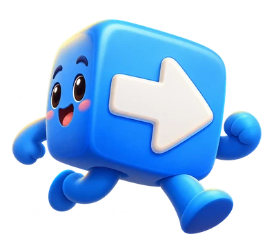
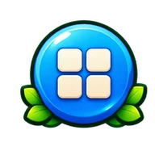
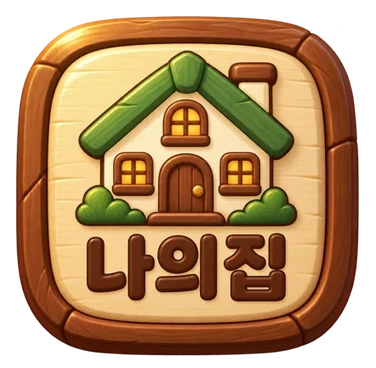
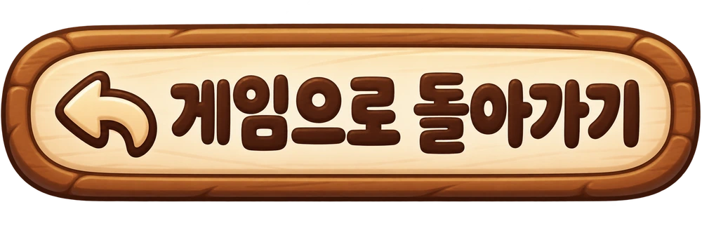

클리어한 미션은다시 도전할 수 있어요
플레이할 미션을 선택하세요
클리어한 미션은 다시 도전할 수 있어요최초 클리어 보상은 한 번만 지급돼요
40단계 완료! 모든 미션을 클리어했어요.다음 버튼으로 1단계를 다시 즐길 수 있어요.
코인은 나의 집을 고치는 데 쓸 수 있어요.


오프라인에서는 이 기기에 저장된 파일만 사용할 수 있어요. 처음 여는 집 이미지나 소리는 연결이 필요할 수 있어요.